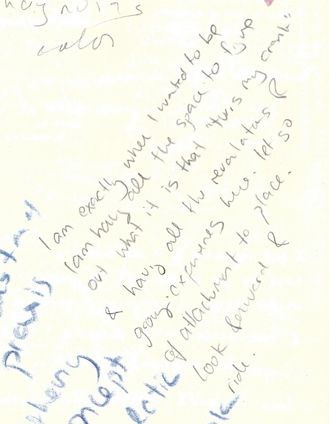

LEARNING THROUGH DISORIENTATION
We live in a moment where locative technology is ubiquitous. Becoming lost no longer requires going out of one's way. Instead, 'disoriented discovery' (Kurgan 2013) begins with a choice to not reference Google Maps, to turn location off and allow position to remain indeterminate.
One day I biked to Lighthouse Park, 30 kilometers each way. I decided not to use a navigational map and just find my way there. I biked through downtown and took the water taxi across Burrard Inlet to Lonsdale Quay, from where I leisurely made my way over many hills to Lighthouse Park in West Vancouver. On my way there I took my time biking around neighborhoods, getting a sense of the area. In one cluster of houses it seemed I'd entered a cul-de-sac and was caught in a loop, meaning I'd have to backtrack to continue on. But I had a feeling there would be a pathway somewhere. Sure enough, between two houses was the slimmest trail which opened onto a path that ran a great distance between two clusters of houses.
Detours open up the possibility of surprising connections and serendipitous encounters. Drawing on serendipitous encounters with the lure of serendipity itself, Esther Fitzpatrick (2017) describes the important role serendipity plays in her creative research practice. The Serendipiter, Fitzpatrick learns, “is a skilled researcher who always has a problem or question that occupies their mind, who immerses themselves 'playfully' and 'passionately' into their world, and who is open to notice and discover connections and patterns throughout their daily Encounters” (2017, 64). In this way, the Serendipter is not dissimilar from the rhythmanalyst or the deep mapper. Fitzpatrick articulates a kinship between the Serendipitor and bricoleur. For Fitzpatrick, being a bricoleur researcher means “allowing space for getting lost, learning to use my intuition by feeling my way through, taking my time, waiting and mulling over, playing with my material, and tossing back and forth between theory, words and knowledge” (2017, 64). Deep mapping is slow scholarship in practice: it takes time to get lost, to make detours, to move forward with only an intuitive sense of a future opening. Les Roberts (2018b) writes that the 'researcher-as-bricoleur'
is arguably less governed by an overarching awareness that they are embarked on a ‘project’, and that, correspondingly, they are performing in compliance with a clearly defined set of ‘aims’ or ‘objectives’. The idea that research might be conducted under conditions of aimlessness and without a clear objective in mind does not necessarily mean that it lacks the rigours of ‘accomplishment and execution’ but that much of what is fashioned in the process is contingent on factors that cannot always be foreseen. (3, emphasis mine)
In output-oriented research, an aim signals a destination that it is customary to work towards. What if aims were refigured as lures? Navigation might then be expressed by pursuing a gut feeling or moving towards a sensed (but not seen) opening, following the drift of a graffiti tag or allowing oneself to be tugged and pulled by affective contours––a sidewalk dappled with sunlight, an inviting cluster of houses, the smell of California lilacs. If "the bricoleur sets out on a journey of discovery” (Fitzpatrick 2017, 64), then unforeseen factors emerging from process impel the bricoleur-as-researcher, to swap Roberts' (2018b) configuration to suit myself. “The process is practice” observes Melora Koepke (2015, 156). Thinking with local practices of salt collection on the west coast of Vancouver Island evokes for Koepke 'a pedagogy of moments': "an expanding notion of the 'fields of possibility,' one that is oriented away from the 'result' or 'training' as an end destination. If this conception of an education has a goal, it is the receding horizon of fixed subjectivity” (2015, 161). The objectives of my research and the object of my thesis have emerged through everyday practices of talking, reading, and otherwise navigating a physical-conceptual field that was at first unfamiliar. I did not embark upon my thesis with a destination-oriented strategy so much as the desire to find out what being a geographer could mean for me. Instead of preemptively delimiting a field whereupon to lay my claim, in true relationship anarchy style, I designed my own commitments so as to “build for the lovely unexpected” (Nordgren 2006). My work is research-creation for it sets up a dialogue with the world and is driven by spatial and intellectual topoi which lure me forwards even before I comprehend where they lead (Loveless 2019). Research-creation, which will be elaborated through the pages that follow, is about learning through disorientation… it “follows desire, and builds spaces and contexts that allow the time and space to experiment in unpredictable directions” (Loveless 2019, 70, emphasis in original).
Relinquishing 'fixed subjectivity' and the 'lust to be a viewpoint and nothing more' is not easy. Indeed, looking down from above things are less messy, more ordered, less mobile, more easily apprehended.
I begin writing for my thesis in a place I come to often - usually late in the morning with a couple hours uninterrupted thinking behind me. From where I stand now I see at once the hazy outline of mountains above downtown's quiet skyscrapers, the subway construction at Broadway & Cambie that exposes the guts of the city while slowing traffic and reconfiguring pedestrian flows, and, directly below me, people walking rolling and riding about their day.
I like places that offer me perspective, like this spot, or the rooftop parkade of the supermarket two blocks from here or Granville Bridge. Places above ground level offer an alternate framing of what goes on in the city - the field in which I practice deep mapping. The sensorium is less overwhelming up here. Less abrasive. Bodily distanced, I feel less. Vertically distanced, I see more. The places I have Been fall into some geospatial context. (The surest method of developing spatial awareness, however, is getting lost on the ground.) From such a vantage, the city and my thesis are more easily theorized.
Friday September 30th 2022
450 days of being here

Risking disorientation - not knowing where (in relation to the known) you are - is disconcerting. Becoming lost can feel scary. Probably my first sensation of being lost was in 2013 when I lived in Istanbul for four months. At 14, this was the first time I had left the United States and the first time inhabiting a city of 15 million. Without a smart phone, I was solely responsible for navigating my mom and I around using paper maps.
My planning became fanatical: schedules and destinations made me confident. However, once, on our way back from the Süleymaniye Mosque, I forgot my map and we got lost. Night began to fall and we found ourselves threading through back streets, unable to find the main road by which we came. I panicked, my palms sweaty as I frantically, desperately, searched for something familiar. The alleys twisted crookedly back upon each other in the darkness causing all sense of direction to be lost. While it seemed like forever, barely half an hour elapsed before we found the busy sidewalks bordering a well lit street. My fear abating I thought, here I am again, wanting only to explore places I have already been, for fear of the unknown.
Excerpt from short story,
Ancient City, 2013
Writing through disorientation is another beast. As I began configuring my thesis, I realized the entire story of my research could be differentially narrated through the framing of each page. Where to start and where to end, what to include and exclude - these exercises in boundary making began to feel like cruel and impossible tasks, so uncomfortable it was at times difficult to stay seated. It has helped to think of (and write) each page as a provisional configuration of ideas, where each page is articulated through dialogue with every other. Of course, this too led to disorientation.
Nothing is where I left it. I get up for a walk or eat or rest and when I return the words are there but I've forgotten what they meant. Is my thesis just writing about writing a thesis? Or doing fieldwork? I know I thought it all meant something yesterday. I felt it, at least. I had six ideas before noon and but then I read the last chapter of this book and now I'm not so sure what matters. Is it all quite simple and elegantly connected from the start? Or is it a tangled snarl of threads which no amount of 'good' writing can unravel. Topology shifts with something so mundane as a bikeride along an unfamiliar route. The city and my framework rearranges ever so slightly, coheres, connects back to something last visited a year ago. My working memory can hold no more than four things at a time which makes writing a thesis where everything is connected and also layered and happening all at once very challenging. I don't think one sentence at a time. I feel ideas and their connections, wake up with wor[l]ds in my mouth, then iterate through phrasings until I land on an arrangement of words and punctuation that best approximates the feeling. And then I write around this grain until something is said. Oftentimes, I accidentally write something I never thought of before but which makes total sense. I'm trying to practice writing around nothing (yet) - not waiting for the grain between my teeth to start writing but just saying whatever's on my mind when I feel stuck and seeing if it goes anywhere. It's all possibility before you begin - every feeling a language in the process of becoming.
Early summer, 2023
Learning through disorientation means embracing (or accepting, to begin with,) the challenge of navigating what is unfamiliar. I have learned that being lost is not so much the absence of direction but an opportunity to attune to the process of becoming familiar. Perhaps the very state of 'being lost' is relational. If your aim is disoriented discovery, then purposefully wandering into as yet unfamiliar realms has more to do with finding your way than losing it. Disorientation makes possible encounters and connections otherwise unlikely under the 'tyranny of orientation' (Kurgan 2013). For me, having completed a Bachelor of Science in physical geography and intending to pursue a Phd, there is something about this degree - a Master of Arts - that lends itself as a time and space for being all around disoriented, to "cultivate a practice of getting ‘lost’ in our research" (Fitzpatrick 2017, 64), and find ourselves lured in unpredictable directions by unforeseen factors.

Fieldnote from spring 2022: I am exactly where I wanted to be/ I am having all the space to figure out what it is that "turns my crank" and having all the revelations and growing experiences here. let go of attachment to place. look forward and ride.
My thesis is therefore process rather than destination oriented. It emerges from navigating the field of possibilities opened up when A and B are recognized to be but place holders like latitude and longitude. "Every exit is an entry somewhere else" says an unsigned mural nearby my favorite brewery. As illuminated in the next page, the iteration of a form reveals beginning and end as merely places of turning and return.